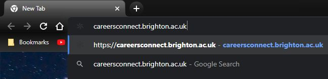
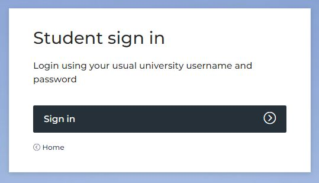
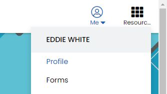
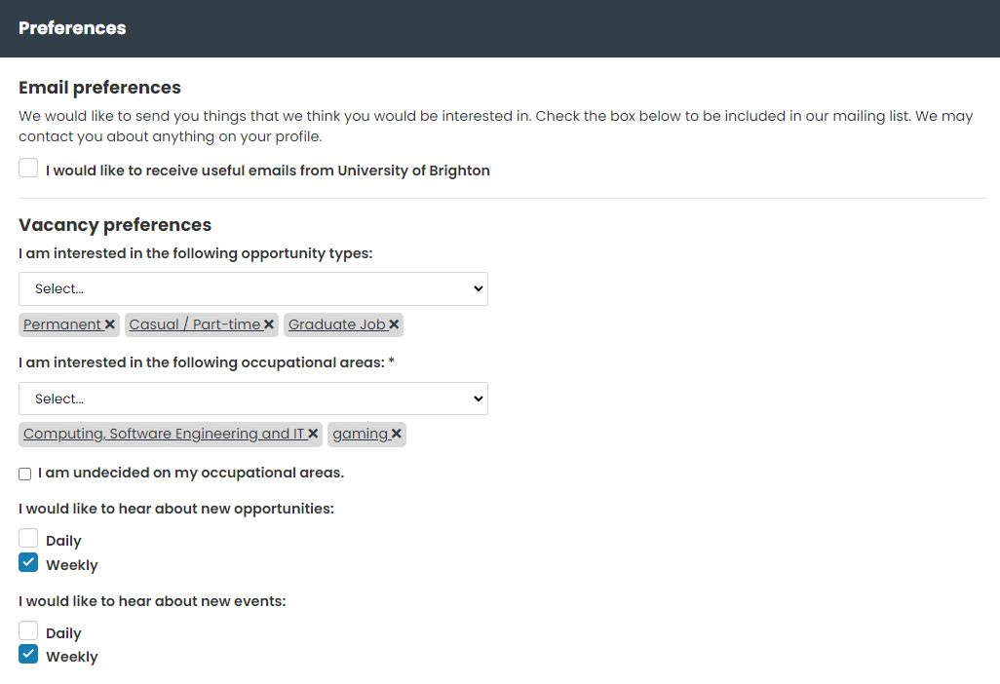
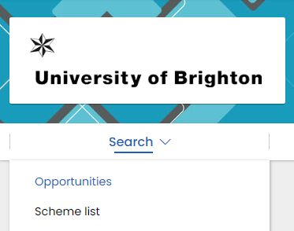
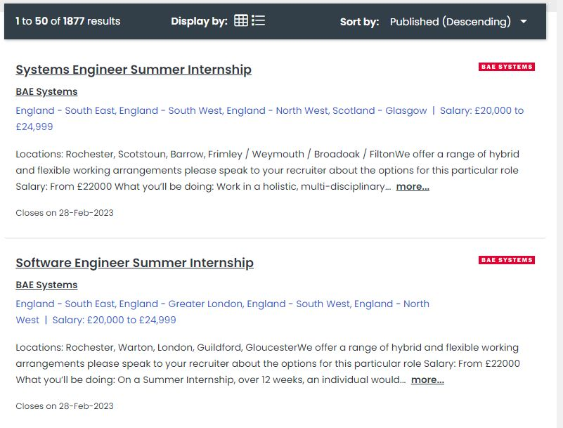
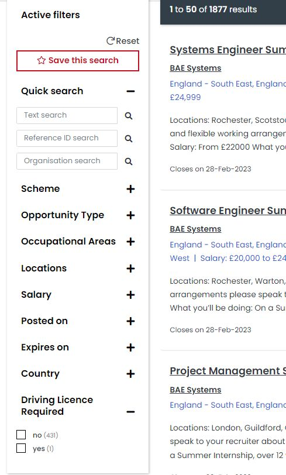

How to use Careers Connect to find Jobs and Experiences
-
Step 1
In a web browser, go to careersconnect.brighton.ac.uk.
-
Step 2
Click "Student sign in", and then login with your University Account.
-
Step 3
Click on "Me", and choose "Profile".
-
Step 4
Under "Preferences" and "Vacancy preferences", select the Opportunity Types and Occupational Areas you are Interested in, and click "Save" in the bottom right.
-
Step 5
Then under "Search", click on "Opportunities".
-
Step 6
You can now see a list of Jobs and Experiences related to your Interests.
-
Step 7
By using the Sidebar to the left of the page, you can filter by differant types of Work, Salary, and Locations, etc.